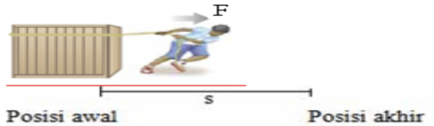
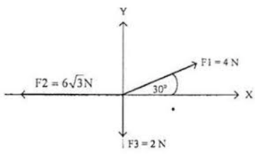

Usaha
Usaha adalah suatu besaran skalar, dimana kita dapat menghitung energi yang diperlukan, untuk memindahkan suatu benda bermassa, dari satu titik ke titik lain. Sehingga jika kita memindahkan benda tersebut ke tempatnya semula, maka Usaha dinyatakan sebagai 0
Secara matematis, Usaha dapat didefinisikan dalam sebuah rumus, yakni:

Dimana:
F = Gaya dalam Newton
s = perpindahan dalam meter
θ = Sudut antara gaya dan perpindahan
W = Usaha dalam Joule
Gaya Gravitasi

Ketika terdapat dua objek dengan jarak dan massa, maka diantara kedua objek tersebut gaya gravitasi akan muncul. gaya gravitasi adalah sebuah gaya yang akan selalu bersifat tarik menarik, satu objek dengan objek yang lain, mau dua, tiga, maupun banyak jumlahnya objek pada diagram tersebut. Maka dari sini kita dapat merumuskan bahwa:

Dimana:
G = Tetapan gravitasi 6,67 x 10^-11
r = Jarak antara pusat benda
M1, M2 = Massa masing - masing benda
Medan Gravitasi
Medan gravitasi didefinisikan sebagai ruang di sekitar suatu benda yang bermassa M, dimana benda lain di ruangan tersebut yang juga bermassa didalam ruang itu akan mengalami gaya gravitasi. Gaya gravitasi dan medan gravitasi, keduanya merupakan besaran Vektor. Medan gravitasi sendiri juga sering disebut sebagai percepetan gravitasi, dengan satuan yakni:
N/kg = m/s^2

Dari gambar tersebut, kita dapat merumuskan bahwa:
g = percepetan gravitasi
F = gaya gravitasi
G = Tetapan gravitasi 6,67 x 10^-11
M = massa sumber
m = massa objek lainnya
r = jarak, dihitung dari titik psuat setiap benda
Vektor
Vektor adalah suatu besaran yang tidak hanya memiliki nilai namun juga memiliki arah, vektor tidak hanya menunjukkan besaran nilai sesuatu melainkan juga arah ke mana sesuatu tersebut bekerja. Seperti pada gaya, vektor tidak hanya menunjukkan besar gaya yang diterapkan.
Untuk menyederhanakan perhitungan - perhitungan terkait vektor di masa yang akan datang, maka kita juga penting untuk mengetahui komponen vektor. Komponen vektor berbeda dari vektor tersebut sendiri, dimana vektor tersebut mempunyai suatu arah yang spesifik, komponen vektor menentukan seberapa besar vektor tersebut ke arah garis X, Y, dan Z jika tiga dimensional